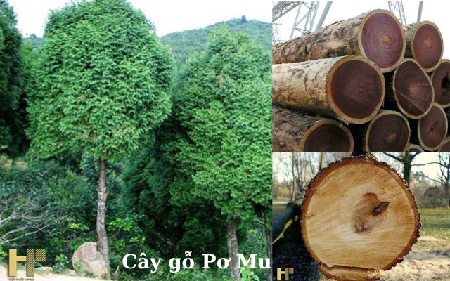

1. Đặc điểm hình thái
Pơ mu là cây thân gỗ lá thường xanh, cao 25–30 m. Cây có vỏ màu ánh nâu-xám dễ bị tróc khi cây còn non. Ở những cây già hơn, trên vỏ có các vết nứt theo chiều dọc, có mùi thơm. Các lá được sắp xếp trong các hệ thống cành nhánh nhỏ bằng phẳng, với các nhánh cây nhỏ nằm trên một mặt phẳng. Lá trên các cây trưởng thành mọc thành các cặp chéo chữ thập đối, các cặp so le không cách nhau đều đặn vì thế chúng biểu hiện như là các vòng xoắn 4 trên cùng một mức; chúng hơi sắc, dài khoảng 2–5 mm, phía trên xanh sẫm với các dải khí khổng màu trắng phía dưới. Các lá ở phần bên có dạng hình trứng và bị nén, còn các lá mặt có dạng mác ngược với đỉnh tam giác. Trên các cây non thì các lá lớn hơn, dài tới 8–10 mm và rộng 6 mm.
Các nón đực có hình trái xoan hoặc hình trụ, dài khoảng 2,5 mm, phần cuối trên chồi cây. Chúng có từ 3 đến 5 cặp vảy bắc. Các nón cái lớn hơn nhiều, dài 15–25 mm và rộng 14–22 mm, dạng hình cầu hay gần như hình cầu và chín vào năm thứ hai. Chúng có 5-8 cặp vảy bắc. Trên mỗi vảy bắc có 2 hạt có cánh. Các hạt dài khoảng 4 mm, có góc cạnh và đầu nhọn. Trên các mặt trên và dưới có 2 chỗ phồng lớn chứa nhựa. Các cánh ở hai bên và không đều nhau.
Loài cây này không chịu được bóng râm, và cần có khí hậu mát mẻ, nhiều mưa. Nó mọc trên các loại đất ẩm trong các khu vực miền núi. Tại Việt Nam, nó mọc trên các địa hình đất đá vôi hay đất nguồn gốc granit từ độ cao 900 m trở lên.

2. Phân bố
Miền Bắc Việt Nam (các tỉnh Bắc Giang, Hà Giang, Hà Tĩnh, Hòa Bình, Sơn La, Nghệ An, Lào Cai, Lai Châu, Thanh Hóa, Tuyên Quang, Yên Bái, Phú Thọ), phía tây miền Trung Việt Nam (các tỉnh Đắc Lắc, Gia Lai, Kon Tum, Lâm Đồng)